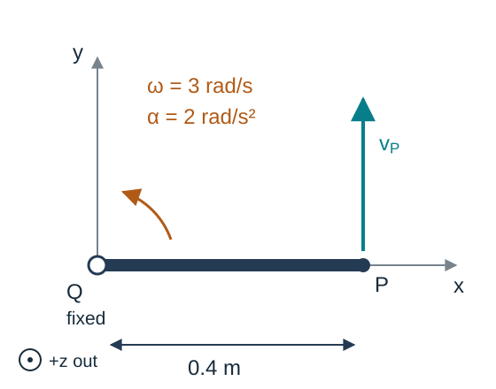
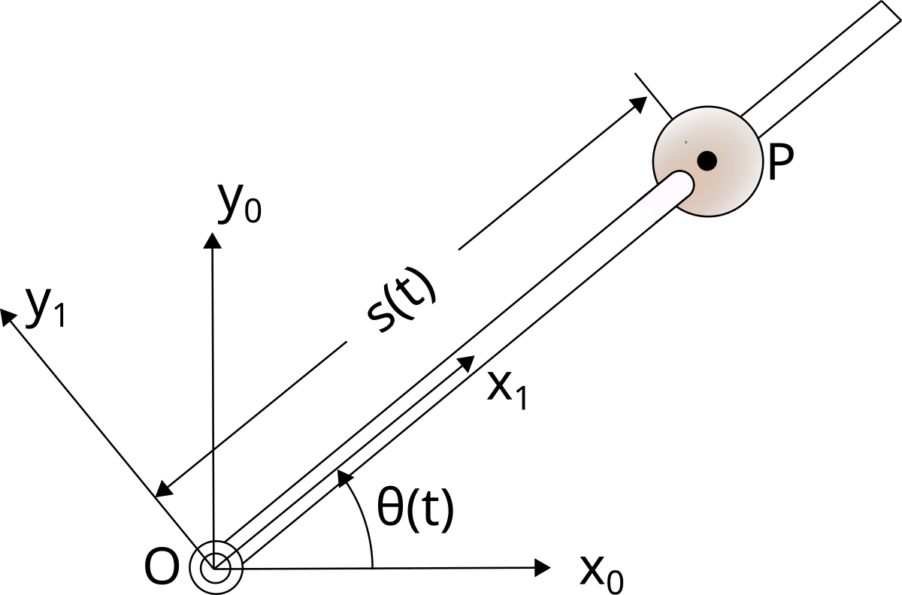
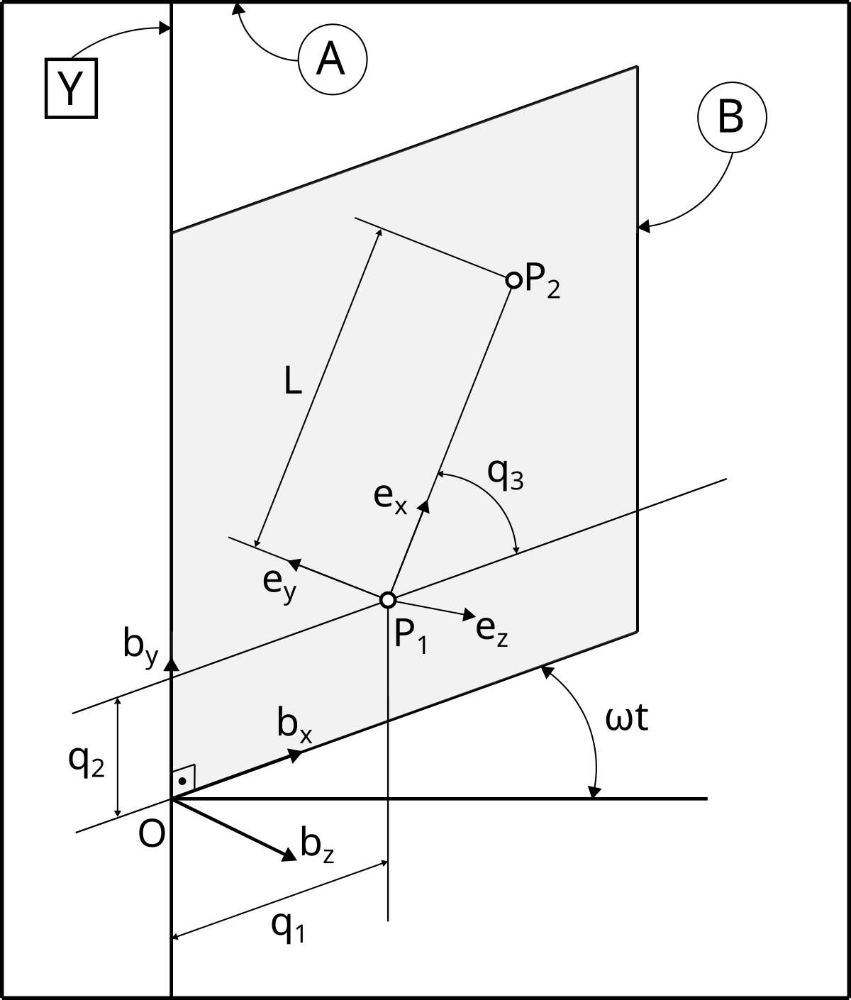

Velocity- and Acceleration-Level Analysis
Kinematics and Machine Dynamics · Chapter 7
Chapter overview
- Angular velocity and vector differentiation
- Simple rotations and auxiliary frames
- Angular acceleration
- Velocities and accelerations of points
- Two points fixed on one rigid body
- A point moving relative to a rigid body
Goal: obtain kinematic quantities needed for equations of motion, with every derivative tied to a reference frame.
Differentiation depends on the frame
Write \left(\dfrac{dv}{dt}\right)_A for the derivative observed in frame A.
A vector fixed in a rotating body B satisfies
\left(\frac{dv}{dt}\right)_B=0,
but generally
\left(\frac{dv}{dt}\right)_A\ne0.
A constant length does not imply a constant vector: its direction can change.
Definition of angular velocity
Let b_1,b_2,b_3 be a right-handed orthonormal basis fixed in B. Dots denote differentiation in A.
\boxed{{}^A\omega^B= b_1(\dot b_2\cdot b_3)+b_2(\dot b_3\cdot b_1)+b_3(\dot b_1\cdot b_2).}
The vector {}^A\omega^B describes the instantaneous rotation of body B relative to frame A.
Changing the body-fixed orthonormal basis does not change that physical angular-velocity vector.
Derivative of a body-fixed vector
For any vector r fixed in B,
\boxed{\left(\frac{dr}{dt}\right)_A={}^A\omega^B\times r.}
In particular, \dot b_i={}^A\omega^B\times b_i.
Since r=r_1b_1+r_2b_2+r_3b_3 with constant r_i,
\dot r=\sum_i r_i\dot b_i ={}^A\omega^B\times\sum_i r_i b_i.
This converts differentiation of a rotating direction into a cross product.
Why the basis derivative is a cross product
Differentiating the orthonormality relations gives
\dot b_1\cdot b_1=0,\qquad \dot b_3\cdot b_1=-\dot b_1\cdot b_3.
Using the definition of angular velocity,
\begin{aligned} {}^A\omega^B\times b_1 &=-b_3(\dot b_3\cdot b_1)+b_2(\dot b_1\cdot b_2)\\ &=b_3(\dot b_1\cdot b_3)+b_2(\dot b_1\cdot b_2)\\ &=\dot b_1. \end{aligned}
The missing b_1 component is zero. The other two basis vectors follow cyclically.
The transport theorem
For a vector that may also change relative to B,
v=v_1b_1+v_2b_2+v_3b_3.
Differentiating coefficients and basis vectors separately gives
\boxed{\left(\frac{dv}{dt}\right)_A =\left(\frac{dv}{dt}\right)_B+{}^A\omega^B\times v.}
The first term measures change relative to the moving frame; the second accounts for rotation of that frame.
All terms are vectors. Express their components in a common basis before adding them.
Connecting angular velocity to rotation matrices
Let R=R_{ab}(t). Its columns are the body axes expressed in A.
\dot R=\widehat{\omega_a}R, \boxed{\widehat{\omega_a}=\dot RR^\mathsf{T},\qquad \widehat{\omega_b}=R^\mathsf{T}\dot R.}
Here \omega_a and \omega_b are coordinates of the same {}^A\omega^B in different bases, with \omega_a=R\omega_b.
Differentiating R^\mathsf{T}R=I shows that these matrices are skew-symmetric.
Simple angular velocity
Suppose a unit vector k has fixed direction in both A and B throughout an interval.
Then B has a simple angular velocity in A:
\boxed{{}^A\omega^B=\dot\theta k.}
The angle \theta follows the right-hand rule about k.
\dot\theta is a signed angular rate; the magnitude of the angular velocity is |\dot\theta|.
Deriving the simple-rotation formula
Take b_3=a_3=k and
b_1=\cos\theta\,a_1+\sin\theta\,a_2, b_2=-\sin\theta\,a_1+\cos\theta\,a_2.
Differentiating in A gives
\dot b_1=\dot\theta b_2,\qquad \dot b_2=-\dot\theta b_1,\qquad \dot b_3=0.
Substitution into the angular-velocity definition yields {}^A\omega^B=\dot\theta b_3.
Auxiliary reference frames
Introduce an intermediate frame C. Angular velocities add as vectors:
\boxed{{}^A\omega^B={}^A\omega^C+{}^C\omega^B.}
For a chain of intermediate frames, continue the sum along the chain.
- An auxiliary frame need not be attached to a physical body.
- Simple relative rotations can make each term easy to construct.
- Express the terms in one common basis before adding components.
There is one resultant angular velocity of B in A, not several simultaneous ones.
Deriving angular-velocity addition
For every vector r fixed in B,
\left(\frac{dr}{dt}\right)_A={}^A\omega^B\times r.
The transport theorem through C also gives
\left(\frac{dr}{dt}\right)_A ={}^C\omega^B\times r+{}^A\omega^C\times r.
Their difference has zero cross product with every body-fixed vector. Therefore,
{}^A\omega^B={}^A\omega^C+{}^C\omega^B.
Example: a yawing base and pitching arm
Frame C yaws through \psi about the fixed a_z axis. Body B pitches through \theta about c_y.
\boxed{{}^A\omega^B=\dot\psi a_z+\dot\theta c_y.}
Since c_y=-\sin\psi\,a_x+\cos\psi\,a_y,
\omega_a=\begin{bmatrix}-\dot\theta\sin\psi\\ \dot\theta\cos\psi\\\dot\psi\end{bmatrix}.
Euler-angle rates are coefficients along different axes; they are not generally the Cartesian components of angular velocity.
Angular acceleration
The angular acceleration of B in A is
\boxed{{}^A\alpha^B=\left(\frac{d\,{}^A\omega^B}{dt}\right)_A.}
The transport theorem also gives
\left(\frac{d\,{}^A\omega^B}{dt}\right)_A =\left(\frac{d\,{}^A\omega^B}{dt}\right)_B +{}^A\omega^B\times{}^A\omega^B.
The cross product vanishes, so either derivative frame can be used for this particular vector.
Changing direction contributes to acceleration
Write \omega=\Omega k, where k is a time-varying unit direction.
\alpha=\dot\Omega k+\Omega\left(\frac{dk}{dt}\right)_A.
A constant angular-speed magnitude does not imply zero angular acceleration.
For a simple rotation, k is fixed, so
\boxed{\omega=\dot\theta k,\qquad \alpha=\ddot\theta k.}
Outside this special case, \alpha need not be parallel to \omega.
Angular accelerations do not simply add
Differentiate {}^A\omega^B={}^A\omega^C+{}^C\omega^B in A:
\boxed{{}^A\alpha^B={}^A\alpha^C+{}^C\alpha^B +{}^A\omega^C\times{}^C\omega^B.}
The additional term accounts for the rotation of the intermediate frame.
For the yaw–pitch example,
{}^A\alpha^B=\ddot\psi a_z+\ddot\theta c_y +\dot\psi\dot\theta(a_z\times c_y).
Even constant \dot\psi and \dot\theta can produce nonzero angular acceleration.
Velocity and acceleration of a point
Choose an origin O fixed in reference frame A, and let p=\overrightarrow{OP}.
\boxed{{}^Av^P=\left(\frac{dp}{dt}\right)_A,\qquad {}^Aa^P=\left(\frac{d\,{}^Av^P}{dt}\right)_A.}
A reference frame is essential: a point can be stationary in one frame and moving in another.
From here, v_P,a_P,\omega,\alpha refer to motion observed in A unless a different frame is shown.
Two points fixed on one rigid body
Let Q and P be fixed on body B, and let r=\overrightarrow{QP}.
\boxed{v_P=v_Q+\omega\times r.}
Differentiate p=q+r in A and use \dot r=\omega\times r.
The points have different velocities in general, but share the same body’s angular velocity.
For pure translation, \omega=0 and all body-fixed points have the same velocity.
Acceleration of two body-fixed points
Differentiate the velocity relation in A:
a_P=a_Q+\alpha\times r+\omega\times\dot r.
Since \dot r=\omega\times r,
\boxed{a_P=a_Q+\alpha\times r+\omega\times(\omega\times r).}
- a_Q: acceleration of the reference point.
- \alpha\times r: tangential contribution.
- \omega\times(\omega\times r): normal contribution.
Interpreting the normal term
The vector triple-product identity gives
\omega\times(\omega\times r) =\omega(\omega\cdot r)-\|\omega\|^2r.
For r perpendicular to a fixed rotation axis,
\omega\times(\omega\times r)=-\omega^2r.
This term points toward the axis. A point can accelerate even while its speed is constant.
Do not replace the double cross product with -\omega^2r when r has an axial component.
Worked example: a rotating link
At an instant, Q is fixed, r=0.4e_x m, \omega=3e_z rad/s, and \alpha=2e_z rad/s².

v_P=\omega\times r=1.2e_y\ \mathrm{m/s}.
a_P=\underbrace{\alpha\times r}_{0.8e_y} +\underbrace{\omega\times(\omega\times r)}_{-3.6e_x}. \boxed{a_P=-3.6e_x+0.8e_y\ \mathrm{m/s^2}.}
The normal and tangential components are perpendicular:
\|a_P\|=\sqrt{3.6^2+0.8^2}=3.688\ \mathrm{m/s^2}.
A point moving relative to the body
Let Q be fixed in B, but allow r=\overrightarrow{QP} to change in B.
Define
v_{\rm rel}=\left(\frac{dr}{dt}\right)_B,\qquad a_{\rm rel}=\left(\frac{dv_{\rm rel}}{dt}\right)_B.
Then the transport theorem gives
\boxed{v_P=v_Q+\omega\times r+v_{\rm rel}.}
The body-fixed formula is recovered only when v_{\rm rel}=0.
Deriving the Coriolis term
Differentiate each part of v_P=v_Q+\omega\times r+v_{\rm rel} in A:
\left(\frac{dr}{dt}\right)_A=\omega\times r+v_{\rm rel}, \left(\frac{dv_{\rm rel}}{dt}\right)_A=a_{\rm rel}+\omega\times v_{\rm rel}.
Thus
\boxed{a_P=a_Q+\alpha\times r+\omega\times(\omega\times r) +2\omega\times v_{\rm rel}+a_{\rm rel}.}
One \omega\times v_{\rm rel} term comes from each derivative. Their sum is the Coriolis acceleration.
The coincident material point
Let \bar B be the material point of body B coincident with P at the instant considered.
\boxed{{}^Av^P={}^Av^{\bar B}+{}^Bv^P,} \boxed{{}^Aa^P={}^Aa^{\bar B}+{}^Ba^P +2\,{}^A\omega^B\times{}^Bv^P.}
Coincidence of positions does not imply equality of velocities.
The identity of the coincident material point can change as P moves across the body.
Example: bead on a rotating wire

Original Lecture 04, bead-on-wire example.
Let the wire rotate in a horizontal plane about a fixed pivot.
r=s e_r,\qquad \omega=\dot\theta e_z.
The rotating basis satisfies
\dot e_r=\dot\theta e_\theta,\qquad \dot e_\theta=-\dot\theta e_r.
Here s changes as the bead slides along the wire.
Bead velocity and acceleration
The velocity is
\boxed{v_P=\dot s\,e_r+s\dot\theta\,e_\theta.}
Differentiating again gives
\boxed{a_P=(\ddot s-s\dot\theta^2)e_r +(s\ddot\theta+2\dot s\dot\theta)e_\theta.}
| Term | Meaning |
|---|---|
| \ddot s\,e_r | Relative acceleration along the wire |
| -s\dot\theta^2e_r | Normal acceleration |
| s\ddot\theta e_\theta | Tangential acceleration of the wire |
| 2\dot s\dot\theta e_\theta | Coriolis acceleration |
Worked example: sliding bead
At an instant, s=0.5 m, \dot s=0.2 m/s, \ddot s=0, \dot\theta=2 rad/s, and \ddot\theta=0.
v_P=0.2e_r+1.0e_\theta\ \mathrm{m/s}, \boxed{a_P=-2.0e_r+0.8e_\theta\ \mathrm{m/s^2}.}
The 0.8e_\theta term remains even though both rates are constant.
If the bead is locked to the wire, \dot s=\ddot s=0 and the Coriolis term disappears.
Example: a line moving in a rotating plane

Original Lecture 04, moving-line example.
The plane rotates with constant angular velocity \Omega b_y about a fixed axis through O.
p_1=q_1b_x+q_2b_y, p_2=p_1+Le_x.
The segment’s frame E rotates relative to B by q_3 about b_z:
{}^A\omega^E=\Omega b_y+\dot q_3b_z.
Velocity of the moving line endpoints
For P_1, transport through frame B gives
v_{P_1}=\dot q_1b_x+\dot q_2b_y-\Omega q_1b_z.
For P_2, the fixed-length vector Le_x rotates with frame E:
v_{P_2}=v_{P_1}+{}^A\omega^E\times Le_x.
Using e_x=\cos q_3\,b_x+\sin q_3\,b_y,
\boxed{v_{P_2}=(\dot q_1-L\dot q_3\sin q_3)b_x +(\dot q_2+L\dot q_3\cos q_3)b_y -\Omega(q_1+L\cos q_3)b_z.}
The two terms use different relative motions; neither is omitted.
Differentiating the Chapter 6 constraints
For a mechanism with dependent coordinates z and input u,
F(z,u)=0.
One derivative gives the velocity equations:
\boxed{F_z\dot z+F_u\dot u=0.}
A second derivative gives
\boxed{F_z\ddot z+F_u\ddot u+\dot F_z\dot z+\dot F_u\dot u=0.}
Solve linear systems at the already-known position. A singular F_z can prevent a unique velocity or acceleration solution.
Example: four-bar velocity equations
Using Chapter 6’s absolute angles \alpha,\beta,\gamma,
\begin{bmatrix}-l_2\sin\beta&l_3\sin\gamma\\ l_2\cos\beta&-l_3\cos\gamma\end{bmatrix} \begin{bmatrix}\dot\beta\\\dot\gamma\end{bmatrix} =\begin{bmatrix}l_1\sin\alpha\\-l_1\cos\alpha\end{bmatrix}\dot\alpha.
For the earlier configuration (\alpha,\beta,\gamma)=(60^\circ,0,60^\circ) and (l_1,l_2,l_3)=(1,2,1) m,
\dot\alpha=1\ \mathrm{rad/s} \quad\Longrightarrow\quad \dot\beta=0,\ \dot\gamma=1\ \mathrm{rad/s}.
This is the parallelogram assembly: the coupler translates without rotating.
Example: four-bar acceleration equations
With the same matrix J from the velocity solve,
J\begin{bmatrix}\ddot\beta\\\ddot\gamma\end{bmatrix} =\begin{bmatrix} l_1\sin\alpha\,\ddot\alpha+l_1\cos\alpha\,\dot\alpha^2 +l_2\cos\beta\,\dot\beta^2-l_3\cos\gamma\,\dot\gamma^2\\ -l_1\cos\alpha\,\ddot\alpha+l_1\sin\alpha\,\dot\alpha^2 +l_2\sin\beta\,\dot\beta^2-l_3\sin\gamma\,\dot\gamma^2 \end{bmatrix}.
For the preceding example with \ddot\alpha=0, the right-hand side vanishes:
\ddot\beta=\ddot\gamma=0.
The coupler points still have nonzero normal acceleration because the crank rotates at nonzero speed.
Selecting the appropriate relation
| Motion being described | Relation |
|---|---|
| Vector fixed in a body | \dot r=\omega\times r |
| Vector changing in a moving frame | Transport theorem |
| Two body-fixed points | v_P=v_Q+\omega\times r |
| A point sliding relative to a body | Add relative velocity and Coriolis acceleration |
| A closed mechanism | Differentiate its closure equations |
Always identify the reference frame, the vector direction, and whether the point is fixed in the body.
References and transition to dynamics
Reading: compiled notes, Chapter 7, pp. 43–48; Appendix B for vector differentiation.
Primary reference: Thomas R. Kane and David A. Levinson, Dynamics: Theory and Applications (1985).
Lecture examples: original Lecture 04, moving line in a rotating plane and bead on a rotating wire.
The kinematics block is complete: configurations, velocities, and accelerations are now available for force and moment balances.
Next: Chapter 8 — Mass Distribution.

← Course Home · Kinematics and Machine Dynamics · Chapter 7